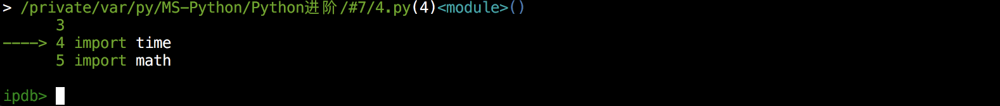
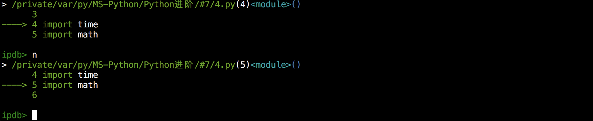
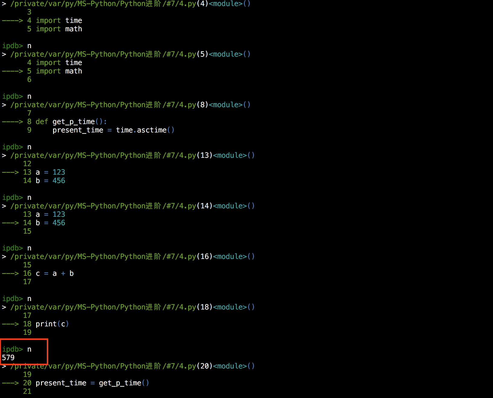
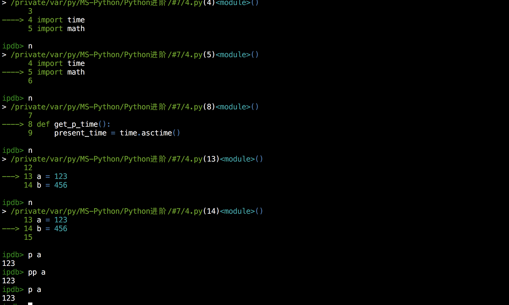
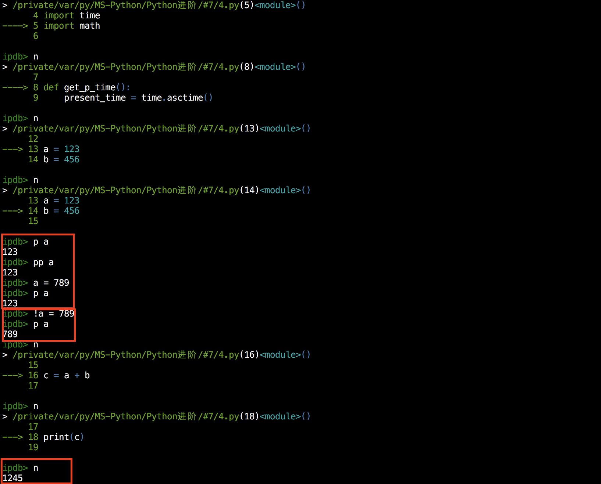
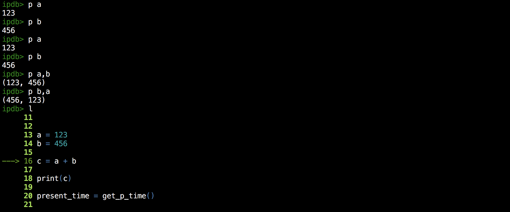
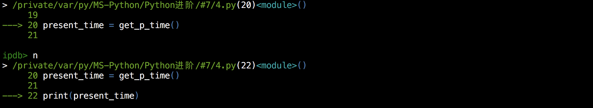
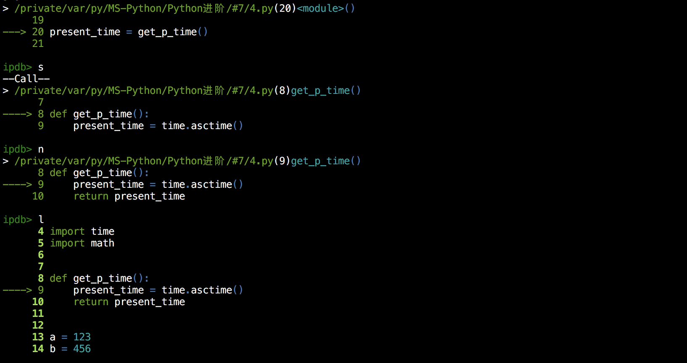

#7 Python代码调试
Python已经学了这么久了，你现在已经长大了，该学会自己调试代码了！相信大家在编写程序过程中会遇到大量的错误信息，我也不例外的啦～遇到这些问题该怎么解决呢？使用最多的方法就是使用print打印中间变量了哇，关于这种方法怎么说呢～low！！！这一节将记录Python中一项很重要的技能：Debug（代码调试），Here We Go！
一、代码调试概述
一个程序员在编写项目的时候，敲代码其实并不会占用太多的时间，占用时间的其实是敲代码之前（整个项目的思路和框架）和敲代码之后（调试代码）。调试代码这个过程是最让人烦心的事情了，真的是烦到脱发～于是有一项过硬的Debug技巧将会减缓掉头发的速度。Debug的方法有很多，最常用的就是：打印中间变量（print）、使用日志模块（logging）、使用代码调试模块（pdb或ipdb）。接下来将会一一讲解
二、Debug方法一：print函数
print方法适用情景
在程序报错或者结果与预期不符合时，在源代码中直接使用print函数打印中间变量进行检查。
print方法例子
1 | ''' |
题目要求输出49737，但是自己的程序却只输出了49，这是怎么回事呢？
那就使用print打印一下result这个变量的内容哇，于是，在第13行代码中加入 print(result) ： 1
2
3
4
5
6
7
8
9
10
11
12
13
14
15'''
从下列段落中提取出所有数字，并输出
本例结果应该是：49737
'''
import re
test = ''' JAKARTA, Indonesia—Flag carrier Garuda Indonesia said it is seeking to cancel an order for 49 Boeing Co. 737 MAX jets, saying passengers have lost confidence in the aircraft following two deadly crashes in recent months. '''
pattern = re.compile('\d')
result = re.findall(pattern, test)
print(result)
print(result[0] + result[1])
1 | # 运行结果： |
这时就会发现原来是result变量有误，预期result效果为['49', '737']
于是回过头去检查pattern，发现是pattern的锅，应将pattern改为：
1 | pattern = re.compile('\d+') |
于是整个程序变为：
1 | ''' |
结果与预期一样，最后再将 print(result) 这一行删除，整个程序就完工了。
print方法优缺点
优点：
理解和操作方便简单，上手难度低
在编写程序中可以一步一步检查中间变量是否符合预期 缺点：
直接入侵源代码，如果操作失误可能会造成不可挽救的后果
调试完成后需要将这些print行删除掉或者注释掉，否则会造成整个程序运行结果复杂，同时太多print函数的出现会严重拖慢运行速度
三、Debug方法二：logging模块
日志概述
日志是个什么鬼呢？感觉好像日记的样子哎～日志其实和日记是有很大差别的，日志是用来追踪程序运行过程中发生的事情，将这些事情按照一定的格式写入特定的文件中，以后可以通过分析日志，让管理者更加方便地了解整个程序的的运行情况，尤其是了解到程序的健康状态（优秀的日志分析者甚至可以通过日志分析出开发者的操作习惯和兴趣爱好），最后根据这些结果为程序打上合适的补丁。
日志作用
- 代码调试
- 记录程序的运行状况
- 为程序打补丁提供支撑
日志等级
在讲Python日志方法之前，先来了解一下日志中最重要的等级制度：
通常日志分为5个等级：DEBUG, INFO, WARNING, ERROR, CRITICAL
日常编程过程中应该见过WARNING和ERROR吧，一个是警告，一个是错误
从这些单词的英文释义就可以知道每个等级的权重了，DEBUG等级最小，CRITICAL等级最大
还有更详细的等级分法：DEBUG, INFO, NOTICE, WARNING, ERROR, CRITICAL, ALERT, EMERGENCY
logging模块简介
Python中用来记录日志的模块为：logging，这是一个内置标准库
logging模块的日志等级有5个：DEBUG, INFO, WARNING, ERROR, CRITICAL，另外，logging模块支持用户自定义其他等级，但这并不推荐，因为自定义的等级通常会造成等级混乱，极其容易和他人开发的程序冲突。
1 | 日志等级 等级说明 |
logging模块使用方法
日志基本使用方法
1 | import logging |
上述代码就是5种不同级别日志的使用方法，运行一下看看结果如何：
1 | # 运行结果 |
这时一定在疑惑，明明是五个等级啊，怎么只输出了后三个等级的内容
logging模块虽然有5的等级，但是他的默认最小等级是WARNING，也就是说，logging模块会自动忽略WARNING以下的等级，那怎么才能输出5个等级的内容呢？
需要在所有输出语句之前配置日志，看例：
1 | import logging |
1 | # 运行结果： |
那么问题来了， logging.basicConfig 是个什么鬼呢？这个其实就是日志的配置函数，可以配置日志等级、日志输出文件、日志文件的打开模式（默认是追加）、日志格式、日期格式等，这些选项对应的参数分别为：level、filename 、filemode、format、datefmt，举个例子：
1 | import logging |
运行之后会发现屏幕并没有日志信息，而是在当前目录下生成一个文件名为‘test.log’的日志文件，打开看一下这个文件：
1 | DEBUG:root:My level is debug |
可以看到已经将日志写入到指定文件了，这样就可以将日志保存下来供以后分析利用了。
有的小伙伴会说，自己能不能修改日志的输出格式呢？比如想要加入时间，完全没有问题，这就要使用format参数了，关于format参数的使用，在下面罗列了一张表格供大家参考：
1 | 使用格式 概述 |
举个例子：
1 | import logging |
查看‘test.log’：
1 | DEBUG:root:My level is debug |
可以看到日志输出格式明显发生了改变
注意：打开文件模式默认为追加
如果想要改变时间的输出格式，需要使用datefmt参数，要注意datefmt参数要在format参数里有时间的前提下才会生效，这里就不在举例了，关于时间的格式可以参考time模块时的讲解
日志高级使用方法
以后再介绍哇，基本的使用方法已经可以满足使用了，高级使用方法比较复杂，以后再更新
四、Debug方法三：pdb模块和ipdb模块
pdb和ipdb概述
pdb是Python内置的Debug模块，但是其功能不够强大，于是便有了第三方模块ipdb的出现；它们两个的关系就好像python和ipython的关系。
ipdb调试代码是比print函数更加高级和灵活的方式，应当熟练应用ipdb的使用方式，并且取代print这种low方法🐔🚄
ipdb不需要入侵源代码，可以按步执行，可以打断点，可以在程序运行时查看变量值，可以在程序运行时修改变量值，盘它！
ipdb安装
1 | pip install ipdb |
ipdb的使用
学习ipdb，心中要有一张表：
1 | 命令 说明 |
使用ipdb时，可以在代码内部提前导入ipdb模块，但这通常是不现实的；通常采取的方法是这样的，在命令行输入：
1 | python -m ipdb xxx.py |
输入以上命令后，便会进入ipdb的debug交互模式，接下来开始举例（多图警告）：
案例代码： 1
2
3
4
5
6
7
8
9
10
11
12
13
14
15
16
17
18
19
20
21
22# This is a test for ipdb
# Author: MinuteSheep<minutesheep@163.com>
import time
import math
def get_p_time():
present_time = time.asctime()
return present_time
a = 123
b = 456
c = a + b
print(c)
present_time = get_p_time()
print(present_time)
案例1: 使用n 在命令输入 python -m ipdb 4.py 后，会出现如下交互模式：

聪明的你已经发现代码一进入就执行到了第4行，其实这也很好理解，前面3行都是注释嘛，对代码的执行并没有实际作用，ipdb遇到注释语句会自动跳过的
接下来输入一个n，让那个代码继续执行一行：

可以看到返回的结果在动态的运行，多输入几次看看效果哇：

执行多次n后，程序按照预计的顺序执行
注意：执行到18行遇到print(c)，但是并没有立即返回结果，那是因为箭头位置是指将要执行这一行了，本次并不会执行，所有下一步才输出c的值579
注意：程序执行到第8行代码时，遇到定义函数，这时在执行下一行时，代码会跳过函数部分，直接来到13行
案例2: 使用exit或q
输入exit或q便会直接退出🙈
案例3: p或pp

上面图片中可以看到使用p或pp打印变量的值
案例4: 使用!

由上图可知：想要修改变量需要在变量前面加一个!
案例5: 使用list或l

当你调试代码过程中忘记了程序执行到哪里了的时候，可以使用l来查看一下，效果如上图
案例6: 使用step或s

当遇到执行函数时，默认会在后台执行完函数并且指向下一行代码，但是按照我们的思维，当遇到执行函数时，需要返回头去看看函数时怎么运行的，想要看看代码在函数中时如何一步一步运行的，使用s即可：

ipdb基本使用方法就这些，还有一点关于断点的使用，下次补充更新🙉